+
WELCOME TO THAILAND'S NATURE
Find Your Favorite Destination
 Hot
Hotselling
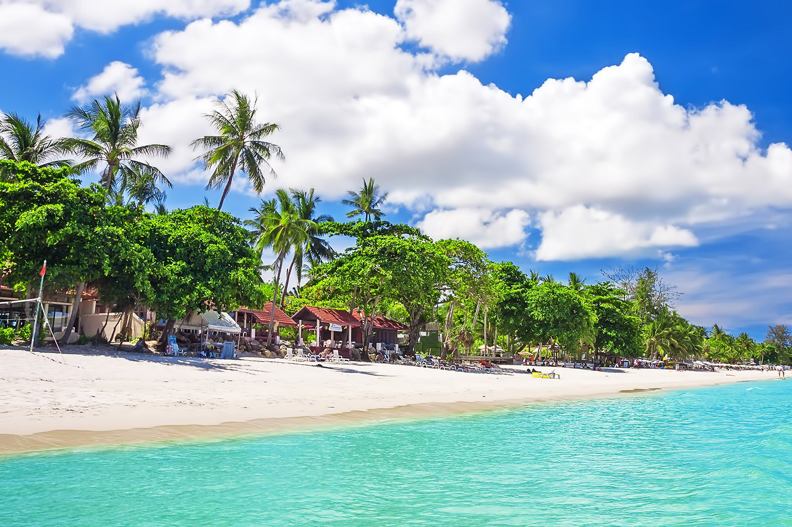
Pantai Chaweng
Chaweng, Thailand
Pantai Chaweng
Berkunjung ke daerah Koh Samui, tak lengkap rasanya bila kita tak menginjakkan kaki di pasir putih pantai cantik Chaweng, salah satu destinasi bahari terbaik untuk dikunjungi bersama keluarga.Selain untuk asyik berenang, berjemur ataupun sekedar bersantai, obyek wisata bahari Chaweng yang sangat landai ini juga cukup rekomendasi untuk dijadikan sebagai tempat berburu oleh oleh.
Back
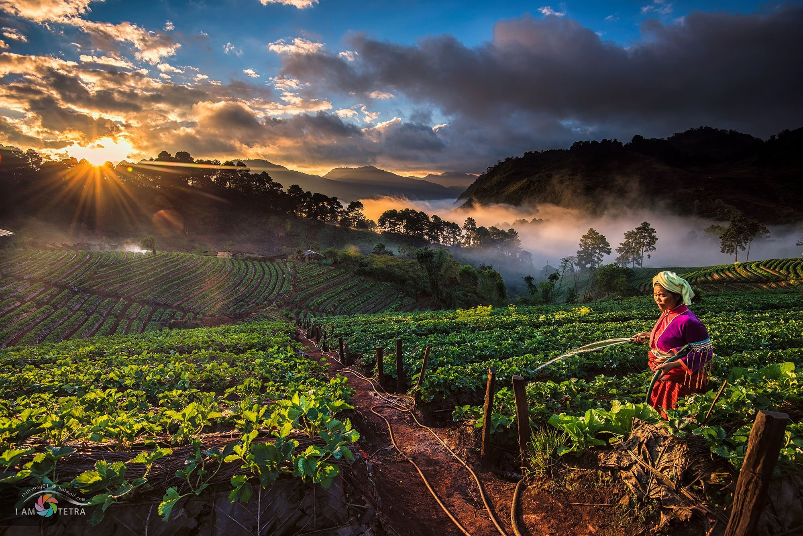
Doi Ang Khang
Doi Ang Khang, Thailand
Doi Ang Khang
Bukit Ollon terletak di Lembang Bau, Kecamatan Bonggakaradeng, Provinsi Sulawesi Selatan yang berjarak kurang lebih 40 km dari pusat kota Makale.Ollon adalah hamparan pegunungan yang dilapisi dengan padang rumput yang hijau. Di sini lekukan bukit berjejer, menghiasi pandangan mata Anda. Pemandangan yang sangat indah membuat Anda ingin berlama-lama hingga bermalam di tempat ini.
Alamat: Jl. Ollon, Kabupaten Tana Toraja, Sulawesi Selatan, Indonesia
Back
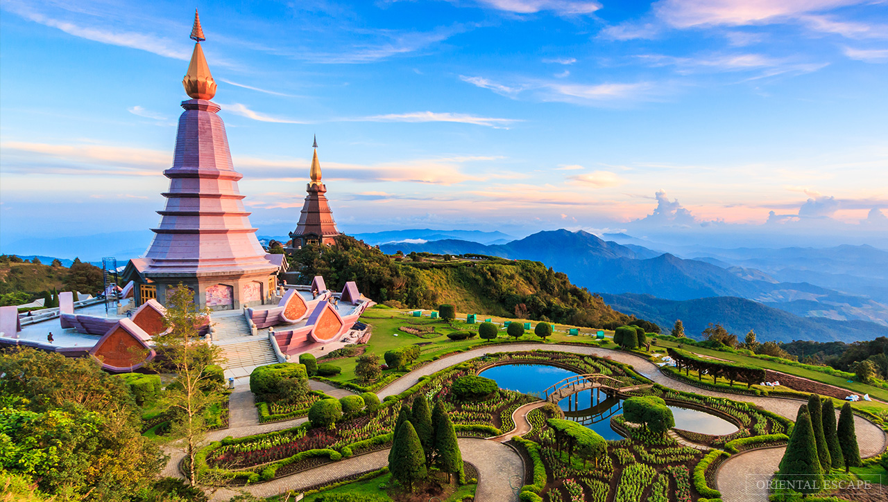
Doi Inthanon
Chiang Mai, Thailand
Doi Inthanon
Doi Inthanon merupakan salah satu taman nasional paling terkenal di Thailand dan berada di gunung tertinggi di Negeri Gajah Putih ini. Air terjun, hutan cemara dan pinus, dan desa-desa terpencil bisa kamu temukan saat menjelajahi taman yang berlokasi di Chiang Mai ini.Cuaca di taman seluas 482 km2 ini cukup dingin, sekitar 10 sampai 12 derajat celcius. Jadi, siap-siap pakai jaket tebal yaaa, sobat tiket. Pemandangannya sangat keren, apalagi kalau kamu sudah sampai ke puncak. Pasti speechless deh!
Back
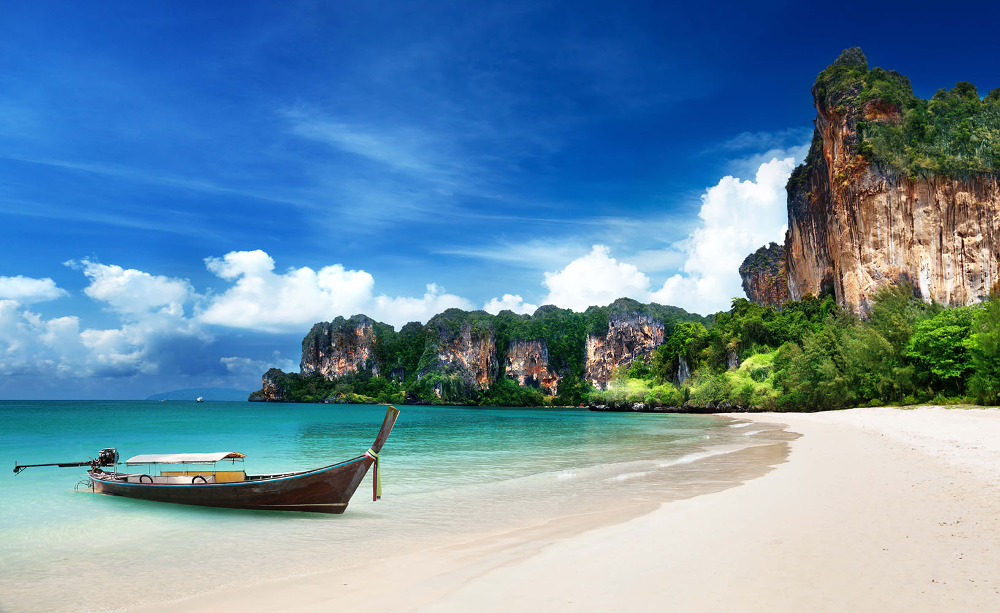
Pantai Railay
Railay, Thailand
Pantai Railay
Pantai yang terletak diprovinsi Krabi ini secara luas dianggap sebagai salah satu pantai terbaik di negeri ini. Pantai Railay mampu memanjakan Anda dengan pantai dengan pasir putih, air biru jernih, ketenangan dan perasaan bahwa Anda telah menemukan sepotong surga di sini. Di sini juga terdapat tebing-tebing kapur yang menjulang tinggi nan eksotis. Tebing-tebing ini menarik minat para petualang baik berpengalaman dan pemula untuk mencoba untuk memanjatnya. Selain itu di sini Anda juga dapat menikmati arung jeram, kayak, dan snorkeling.
Back
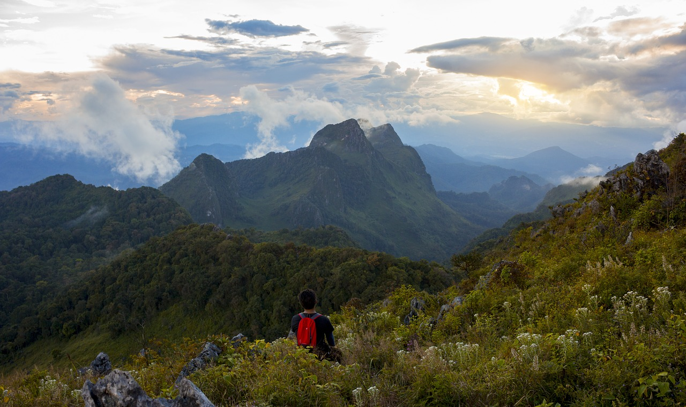
Doi Chiang Dao
Chiang Mai, Thailand
Doi Chiang Dao
Dieng merupakan dataran tinggi di Provinsi Jawa Tengah dengan pesona yang mengagumkan. Secara administratif, kawasan yang sering ditawarkan dalam paket wisata ini membentang di dua kabupaten, yakni Banjarnegara dan Wonosobo. Tepatnya, kawasan vulkanik aktif ini ada di sisi barat kompleks Gunung Sumbing dan Gunung Sindoro.
Alamat : Kec Batur, Kab Banjanegara, Jawa Tengah, Indonesia
Back

Daeng Karachaan
Kaeng Karachan, Thailand
Daeng Karachaan
Taman Nasional Kaeng Krachan terletak di sepanjang perbatasan Myanmar. Taman nasional ini mempunyai Sungai Phetchaburi dan Pran Buri yang begitu indah dan mampu menyegarkan pikiran. Taman nasional ini menjadi habitat bagi berbagai satwa liar, termasuk macan tutul, gajah dan landak.
Location : VJMM+W39, Kaeng Krachan, Kaeng Krachan District, Phetchaburi 76170, Thailand
Back
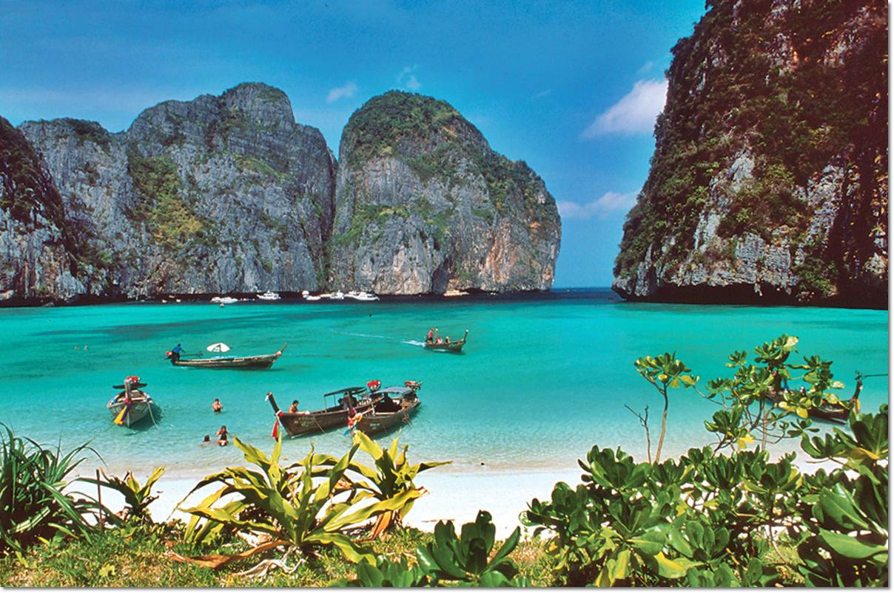
Pulau Phuket
Phuket, Thailand
Pulau Phuket
Phuket merupakan pulau indah yang memiliki pantai berpasir putih dan biru toscanya laut. Lautnya begitu tenang dan akan membuat kamu nyaman ketika bermain di pantai dan pasirnya yang putih. Kamu bisa menikmati suasananya yang tenang dan begitu indah di pulau yang juga memiliki kuliner lezat ini.
Back
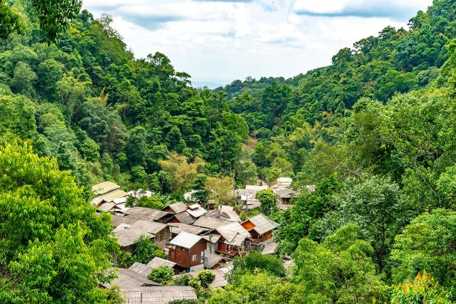
Mae Kampong
Mae Kampong, Thailand
Mae Kampong
Wisata Gunung Bromo adalah obyek wisata alam gunung berapi yang ada di Jawa Timur dengan ragam keindahan dan daya tarik.Bromo terkenal dengan keindahan sunrisenya yang memukau serta sebuah danau kawah. Tidak hanya wisatawan lokal, tetapi turis dari mancanegara juga datang untuk menyaksikan matahari terbit yang indah dari bromo.
Alamat: Podokoyo, Tosari, Pasuruan, Jawa Timur, Indonesia
Back
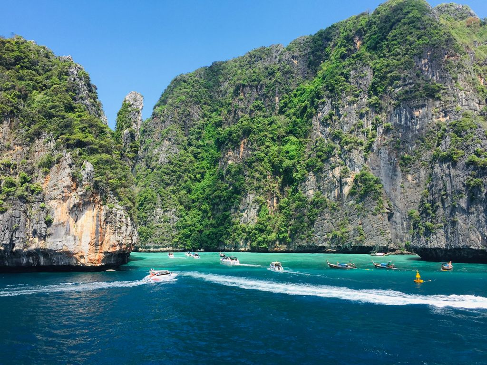
Khao Sok
Khao Sok, Thailand
Khao Sok
Tepat di utara Phuket terdapat gugusan taman nasional yang populer, Khao Sok. Hutan rimbun taman ini telah ada selama ribuan tahun, menumbuhkan beragam satwa liar asli di seluruh taman, dengan ratusan spesies burung dan reptil, lebih dari seribu varietas anggrek yang berbeda dan binatang buas yang sulit ditangkap seperti gajah dan harimau. Setelah seharian hiking, pengunjung dapat bersantai di sepanjang tepi Danau Cheow Lan yang tenang. Danau ini salah satu tujuan paling populer di kawasan ini untuk kayak, kano, dan melihat satwa liar asli Thailand.
Alamat: Jl. Perintis Kemerdekaan No.51 Kecamatan Labuan, Pandeglang, Banten 42264 Indonesia
Back
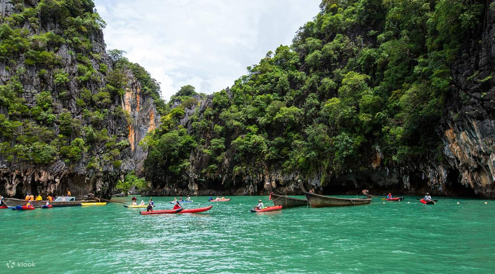
Teluk Phang Nga
Phang Nga, Thailand
Teluk Phang Nga
Terletak sekitar dari 95 km dari pulau Phuket, Teluk Phang Nga adalah salah satu tempat wisata di Thailand yang menjadi favorit para wisatawan mancanegara dan juga merupakan salah satu kawasan paling indah di negara ini.Kawasan ini terdiri dari gua-gua yang indah, gua-gua bawah laut dan pulau-pulau batu kapur. Pulau paling terkenal di teluk ini adalah Ko Ping Kan (lebih dikenal sebagai Pulau James Bond).
Back
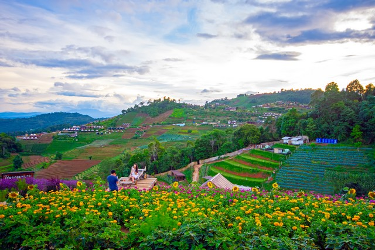
Mon Cham
Mon Cham, Thailand
Mon Cham
Kawah Ijen merupakan salah satu tempat wisata yang masuk ke dalam wilayah Cagar Alam Wisata Ijen. Tempat wisata seluas 2.560 hektar ini punya bentuk serupa danau yang berisi kawah di dalamnya.Kawah Ijen sendiri terbentuk dari letusan gunung berapi Ijen. Pada 2016, UNESCO meresmikan Kawah Ijen sebagai salah satu cagar biosfer yang ada di dunia.
Alamat :Desa Taman Sari, Kec Licin, Kab Banyuwangi, Jawa Timur, Indonesia
Back
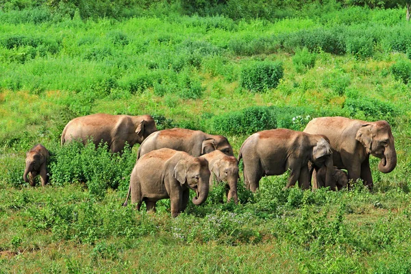
Kui Buri
Kui Buri, Thailand
Kui Buri
Kalau kamu ingin menikmati kehidupan satwa liar, maka Taman Nasional Kui Buri ini wajib untuk masuk dalam daftar rencana perjalanan kamu. Taman Nasional Kui Buri ini menjadi salah satu taman nasional di Thailand yang menarik untuk dikunjungi karena disini kamu bisa melihat ragam satwa liar, terutama gajah.Kawanan gajah sering ditemukan di kolam penyiraman yang berada di dekat gardu Pa Yang. Disini pun telah dilengkapi dengan fasilitas untuk mengamati satwa liar.
Back
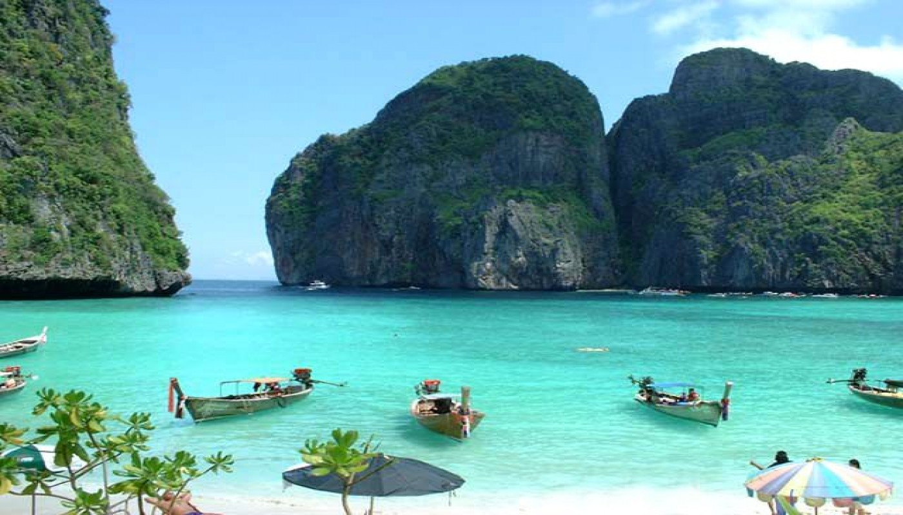
Pulau Phi Phi
Pulau Phi Phi, Thailand
Pulau Phi Phi
Pulau ini menawarkan keindahan luar biasa dengan airnya yang jernih dan tebing-tebing Karst menjulang tinggi.Kalau suka snorkeling, banyak ikan-ikan kecil berwarna-warni yang bisa kamu lihat di perairan pulau. Di Kepulauan Phi Phi, kamu bisa menjumpai Monkey Beach atau Pantai Monyet karena banyak spesies kera yang siap untuk menyambut kamu di sana
Back
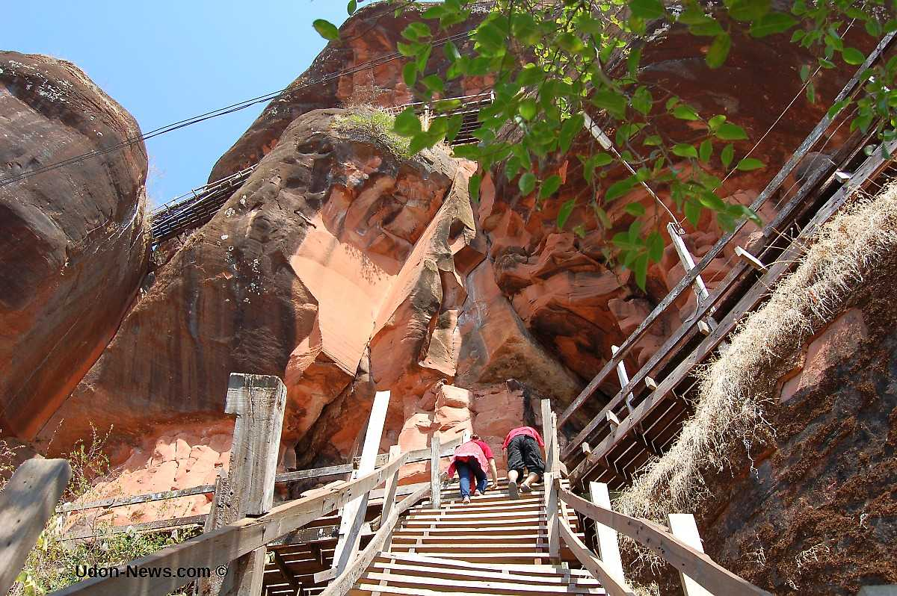
Phu Tok
Phu Tok, Thailand
Phu Tok
Kawasan wisata umbul Sidomukti merupakan salah satu Wisata Alam pegunungan di Semarang, berada di Desa Sidomukti Kecamatan Bandungan Kabupaten Semarang. Kawasan wisata ini dengan didukung fasiltas & Servis: Outbond Training, Adrenalin Games, Taman Renang Alam, Camping Ground, Pondok Wisata, Pondok Lesehan, serta Meeting Room.
Alamat: Manggung, Jimbaran, Bandungan, Kabupaten Semarang, Jawa Tengah, Indonesia
Back
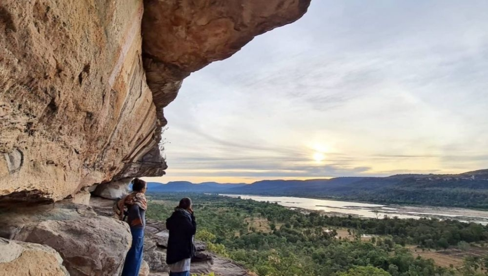
Pha Taem
Pha Taem, Thailand
Pha Taem
Taman Nasional Pha Taem merupakan salah satu dari sedikit taman nasional di negara ini yang tidak hanya mempunyai keindahan alam dan beragam spesies, tetapi juga akar sejarah di mana terdapat desain, gambar binatang dan cetakan tangan yang datang bersama-sama untuk menceritakan sebuah kisah di tebing yang diperkirakan berusia 3.000 tahun.Terdapat pula Sungai Mekong yang menarik untuk ditelusuri.
Back